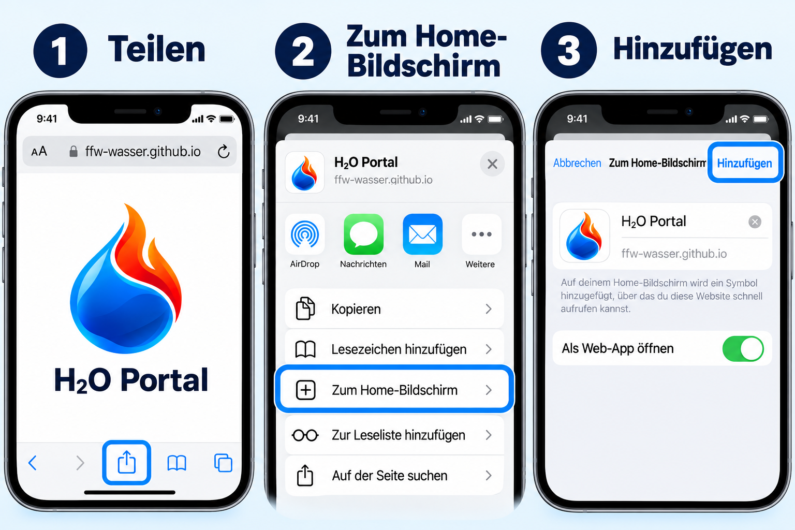
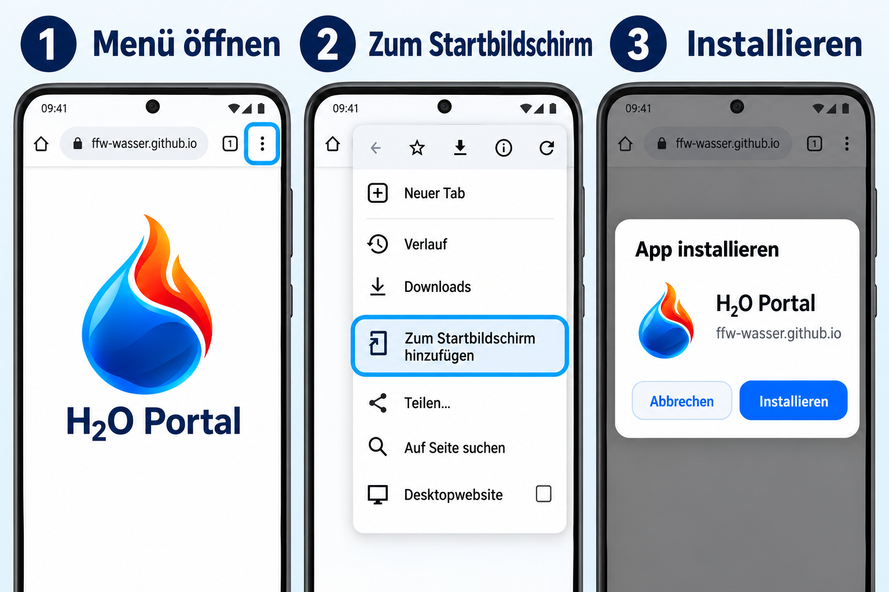
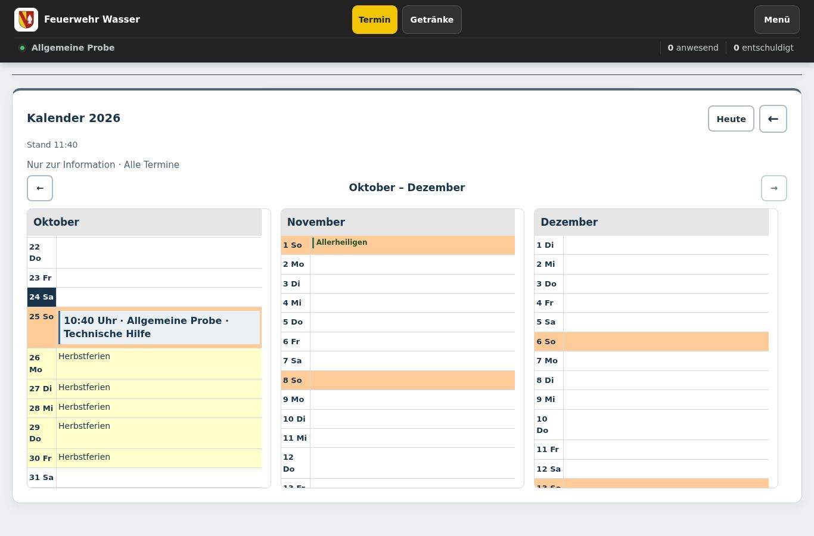
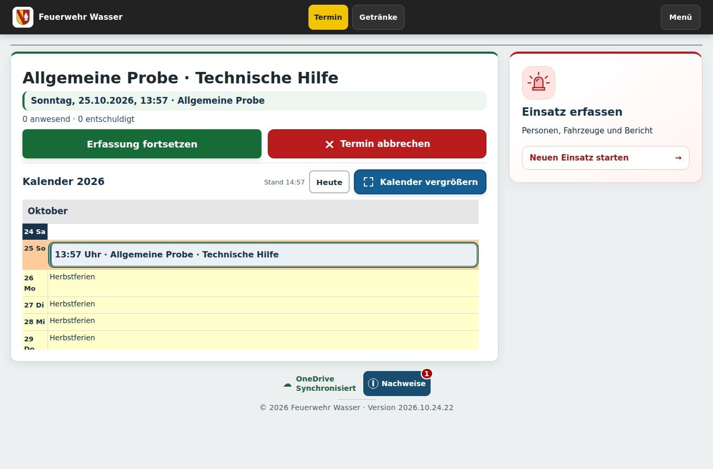
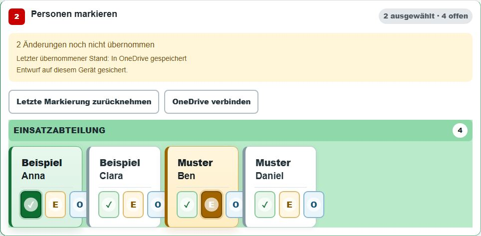
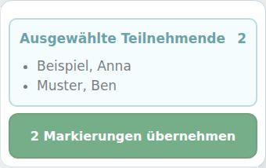
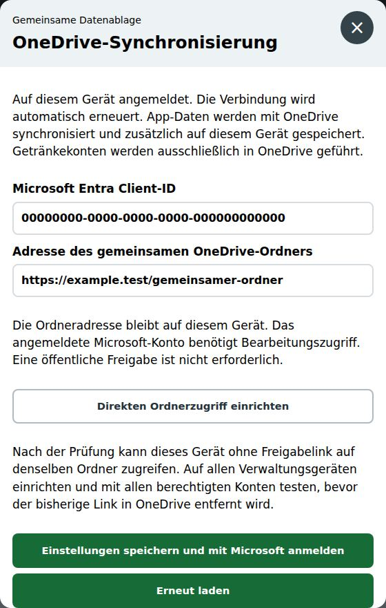

Pläne & Pegel
Feuerwehr Wasser
Hydrantenplan
Wasserentnahmestellen im Überblick
Original: OneDrive → Feuerwehr Share → Webseite → Hydrantenplan → Hydrantenplan-Wasser.pdf. Nach Austausch der Datei hier erneut abgleichen.
Verwaltung und OneDrive-Verbindung erforderlich.
Landkreis Emmendingen
Wasserentnahme aus Gewässern
Pegel Gutach / Elz
Bei einem Abfluss von 1,58 m³/s oder weniger gilt das Entnahmeverbot.
Entscheidend ist der „Abfluss“ im „Tagesmittel am Vortag“. Der aktuelle Messwert und der Wasserstand sind hierfür nicht maßgeblich.
Abfluss und Tagesmittelwert auf NIZ öffnen ↗Öffnet separat. Zum Zurückkehren den neuen Tab schließen oder zurück zur Hauptanwendung wechseln.
Für das Verbot zählt weiterhin der NIZ-Tagesmittelwert des Vortags ↗.
Das Verbot betrifft die erlaubnisfreie Wasserentnahme aus öffentlichen oberirdischen Gewässern im Landkreis Emmendingen. Der Rhein ist ausgenommen. Für erlaubnispflichtige Entnahmen gelten gesonderte Regelungen.
Hinweis: Diese Ansicht zeigt den Grenzwert, aber keinen Live-Messwert. Bitte den Tagesmittelwert direkt beim Niedrigwasser-Informationszentrum Baden-Württemberg prüfen.
Quelle: Landratsamt Emmendingen ↗ · Erläuterung zum Tagesmittel ↗
Freiwillige Feuerwehr · Abt. Wasser
Jahresprobenplan
Hellgelb: Ferien · Apricot: Sonntag · Rosa: Geburtstag · Terminfarben nach Art · Feiertage mit Namen
Veranstaltungen
🎭 Theaternachmittag
Bestellungen werden im persönlichen H₂O-Portal aufgenommen.
🔒 Kasse & Verwaltung
Veranstaltung · Theater
Verwaltung
Kasseneingabe Live-Bestellungen
📅 Name & Bestellannahme
Es kann eine Veranstaltung gleichzeitig geöffnet sein. Bereits bestätigte Bestellungen behalten ihre ursprünglichen Preise.
🍽️ Preisliste Artikel, Kategorien und Preise
Rubrikfarben ändern
Preisliste importieren
Spalten: Artikel, Preis; optional Größe und Rubrik. Auch die Kassencheckliste wird erkannt. Der Import erscheint zuerst als bearbeitbare Vorschau. Rubriken direkt eingeben, etwa Essen, Getränke oder Alkoholfrei. Die Artikel sind nach Rubriken gruppiert. Häufige Artikel mit „Nach oben“ zuerst anordnen; danach „Veranstaltung & Preisliste speichern“ wählen.
🔔 Benachrichtigungen Signalton für neue Bestellungen
⚙️ Zurücksetzen Bestellungen löschen
Veranstaltung zurücksetzen
Löscht sämtliche Bestellungen und Kassenübertragungen der ausgewählten Veranstaltung unwiderruflich. Die Veranstaltung wird geschlossen, die Preisliste bleibt erhalten. Bei Bedarf vorher unter „Auswertung“ als CSV exportieren.
Getränke
Überblick der Änderungen
Gib deine PIN ein, um deine persönliche Mitgliederkarte zu öffnen.
PIN vergessen? Bitte von der Mitgliederverwaltung neu setzen lassen.
Deine Zugänge
Letzte Buchungen
Mein Deckel aufs Handy
Mit der Handykamera scannen. Deinen Kontostand kannst du ohne Anmeldung oder Installation ansehen.
Speichere den Deckel als Lesezeichen oder auf dem Home-Bildschirm. Der persönliche Link ist dein Zugang. Bitte für dich behalten.
Auf dem iPhone kann der persönliche Deckel über „Teilen → Zum Home-Bildschirm“ gespeichert werden.
Handyzugang erneuern
Wenn dein persönlicher Link weitergegeben wurde, kannst du einen neuen erstellen. Alte Links öffnen danach keine neuen Kontostände mehr. Bereits gelesene Daten bleiben erhalten.
PIN freiwillig einrichten
Du entscheidest selbst, ob du den Zugang zu deiner persönlichen Mitgliederkarte mit einer PIN schützt. Ohne PIN öffnet sich deine Karte direkt. Deine Buchungen bleiben erhalten.
Schulden bezahlen
Gesamtschulden
Bar: Geld zuerst in die Getränkekasse legen, dann bestätigen.
Gutschrift nach Prüfung durch die Verwaltung.
Bar bezahlen
Bar bezahlen
Geld in die Getränkekasse legen und anschließend bestätigen.
Mit PayPal bezahlen
Empfänger: Feuerwehr Wasser
PayPal-ZahlungslinkQR-Code scannen oder PayPal-Link öffnen. Namen angeben. Gutschrift nach Prüfung durch die Verwaltung.
Zahlung gespeichert
Deine verbleibenden Schulden:
Anwesenheit
Terminart auswählen
Terminart wählen.
Anwesenheit erfassen
Personen markieren → Auswahl übernehmen.
Nicht gewähltFunktion auswählen
Funktion wählen → Speichern.
Anmeldungen für diesen Termin
0| Zeit | Name | Funktion / Status |
|---|
Noch keine Anmeldung vorhanden.
Übersicht
Verwaltung
Einstellungen
Wiederherstellung
Sicherungspunkte
Letzten lokalen App-Stand wiederherstellen. Dies ersetzt keine OneDrive- oder Kontodienst-Sicherung.
Einstellungen
Getränkeverwaltung
Konten, Buchungen & Treuepunkte
Verbindungen & Getränke-PINs
Technische Einrichtung und persönliche Getränke-PINs verwalten.
Administration
H₂O Portal
Persönliche Zugänge der Abteilung Wasser.
Persönlicher Passkey-Zugang
Identität persönlich prüfen und die einmalige Einrichtung freigeben. Der Passkey gilt für das gesamte persönliche Portal und WhatsApp-Terminlinks. Den QR-Code nur diesem Mitglied zeigen.
Persönliches Portal öffnenH₂O Portal auf dem Handy installieren
Zuerst den persönlichen QR-Code mit der Handykamera scannen. Den angezeigten Link auf dem eigenen Handy öffnen. Auf demselben Handy kannst du oben „Persönliches Portal öffnen“ wählen. Den persönlichen Link nicht weitergeben.
Danach die passende Anleitung öffnen:
Apple iPhone · Safari

- Den persönlichen Link in Safari öffnen. Auf Teilen tippen (Quadrat mit Pfeil nach oben). Je nach Safari-Version zuerst das Menü Mehr (…) öffnen.
- In der Liste nach unten zu Zum Home-Bildschirm scrollen. Fehlt der Eintrag, über Aktionen bearbeiten hinzufügen.
- Falls angezeigt, Als Web-App öffnen einschalten und oben Hinzufügen wählen.
Android · Google Chrome

Vorher den Zugang speichern: Im geöffneten Portal auf „H₂O Portal auf dem Handy speichern“ bzw. „H₂O Portal installieren“ tippen. So bleibt dein persönlicher Zugang auf diesem Handy erhalten. Öffnet sich direkt ein Installationsdialog, kannst du dort schon bestätigen. Sonst weiter über das Browser-Menü:
- Den persönlichen Link in Google Chrome öffnen. Oben rechts auf das Dreipunkt-Menü (⋮) tippen.
- Zum Startbildschirm hinzufügen bzw. Zum Home-Bildschirm hinzufügen wählen. Manchmal heißt der Eintrag direkt App installieren.
- Mit Installieren oder Hinzufügen bestätigen. Falls eine weitere Nachfrage erscheint, ebenfalls bestätigen.
 Fertig! Das H₂O-Portal-Symbol auf dem Home-Bildschirm antippen. Bei der ersten Einrichtung den persönlichen Zugang im Portal bestätigen, falls danach gefragt wird.
Fertig! Das H₂O-Portal-Symbol auf dem Home-Bildschirm antippen. Bei der ersten Einrichtung den persönlichen Zugang im Portal bestätigen, falls danach gefragt wird.
Die Bilder sind nachgebildete Beispielansichten mit dem H₂O-Logo. Menüs können je nach Handy und Browser-Version etwas anders aussehen. Tippe auf ein Bild, um es zu vergrößern.
Einstellungen
Kalender
Google-Kalender pflegen
So trägst du den Termin ein
Dein Beispiel, Feld für Feld erklärt. Die Pfeile zeigen, wo die Angaben in Google Kalender hingehören.
- TitelSonderprobe GF + Ausschuss
Thema des Termins.
Im Titel darf „GF“ stehen.- Datum und Uhrzeit26. Okt. 2026 · 19:00 bis 20:00Einmalig · Mitteleuropäische Zeit
Beginn und Ende eintragen.
Bei Bedarf „Ganztägig“ oder Wiederholung wählen.- OrtGH Wasser
Hier den Treffpunkt eintragen.
Er erscheint in der App.- Google-ErinnerungenE-Mail · 1 Tag vorher
Benachrichtigung · 1 Tag vorher Nur Erinnerungen von Google.
H₂O-Erinnerungen werden in der App eingestellt.- Kalender und Farbe Feuerwehr-Kalender ▾
Richtigen Kalender und Farbe wählen.
Die App übernimmt die Farbe bei eingerichteter Google-Farbanbindung.
Beschreibung
Diese Zeilen kommen gemeinsam in das große Beschreibungsfeld:
- zusätzlich Ausschusssitzung
Freier Zusatzhinweis.
Wird angezeigt, ändert aber keine Terminart.- Terminart: Sonderprobe
Art für die Erfassung.
Hier bleibt es eine Sonderprobe.- Gruppen: Gruppenführer; Ausschuss
Wer ist eingeladen?
Gruppennamen mit Semikolon (;) trennen. Kein „GF und Ausschuss“.- Kleidung: Tagesdienst
Gewünschte Kleidung.
Zum Beispiel Tagesdienst oder Einsatzkleidung.- Freigabe: Ja
Ja: Termin steht fest.
Anmeldung in H₂O und vorgesehene Erinnerungen freigeben.
Nein: Termin noch in Abstimmung.
Zum Beispiel Uhrzeit, Thema oder Teilnehmerkreis noch offen. Der Termin bleibt im Gerätehaus-Jahresplan sichtbar; keine Anmeldung in H₂O und keine Termin-Erinnerungen. Sobald alles feststeht, auf Ja ändern.
Beschreibung zum Kopieren
zusätzlich Ausschusssitzung Terminart: Sonderprobe Gruppen: Gruppenführer; Ausschuss Kleidung: Tagesdienst Freigabe: Ja
Zum Schluss: In Google speichern → in der App Kalender aktualisieren → eingeladene Personen prüfen. Ungültige Angaben verhindern eine neue Freigabe. Gespeicherte Webseiten-Ausnahmen haben weiter Vorrang.
Weitere Terminarten, Gruppennamen und Schlagwörter
Diese Angaben werden ausgewertet
Terminart: Allgemeine Probe, Sonderprobe, Unterricht, Ausschusssitzung, Veranstaltung oder Information.
Gruppe: Exakter aktiver Gruppenname aus der Übersicht unten. Mehrere Gruppen mit Semikolon trennen, zum Beispiel Gruppen: Gruppenführer; Ausschuss. Hier die vollständigen Gruppennamen verwenden; GF ist ein Schlagwort für den Titel. GF und Ausschuss ist kein gemeinsamer Gruppenname.
Kleidung: Gewünschter Text, zum Beispiel Tagesdienst oder Einsatzkleidung.
Freigabe: Ja oder Nein. Nur eindeutige Proben mit gültiger Personenzuordnung können automatisch freigegeben werden.
So kommt es in der App an
Die Steuerzeilen werden nicht als Zusatzinfo angezeigt. Sichtbar bleibt der normale Hinweistext.
Ohne besondere Angaben funktionieren Titel, Ort, Beschreibung und Gruppenschlagwörter wie bisher.
Unbekannte Gruppen, doppelte oder ungültige Angaben werden in der Verwaltung gemeldet. INFO-Einträge lösen auch mit „Freigabe: Ja“ keine Anmeldung aus.
Bestehende Webseiten-Ausnahmen und Geburtstagspersonen bleiben erhalten. H₂O-Sichtbarkeit von Informationen wird weiterhin ausdrücklich in der App eingestellt.
1. Termin in Google anlegen
- Im verbundenen Feuerwehr-Kalender Titel, Datum und Uhrzeit oder einen ganztägigen Zeitraum eintragen.
- Treffpunkt und Zusatzinfos in Ort und Beschreibung ergänzen. Die Beschreibung erscheint im Kalender; mehrtägige Einträge sind möglich.
- In Google speichern, danach hier aktualisieren und Einordnung, Terminart sowie betroffene Personen prüfen. Die Übernahme kann einige Minuten dauern.
2. Welcher Titel passt zu welcher Terminart?
Allgemeine Probe
Schlagwörter: Probe, Gesamtprobe, Hauptprobe, Übungsprobe
Wird als normale Probe erkannt, sofern „Sonderprobe“ nicht im Titel steht.
Beispiel: Probe – Löschangriff
Sonderprobe
Schlagwort: Sonderprobe
Wird als Sonderprobe erkannt. Andere Titel ohne eindeutige Terminart bleiben zur Prüfung offen und werden nicht durch „Freigabe: Ja“ allein freigegeben.
Beispiel: Sonderprobe Atemschutz
Unterricht & Ausschusssitzung
Klare Titel: Unterricht Funk · Ausschusssitzung
Unterricht und Ausschusssitzung werden aus eindeutigen Titeln erkannt. Eine Zeile „Terminart:“ in der Beschreibung kann die Erfassungsart ausdrücklich festlegen.
Information ohne Anmeldung
Am Titelanfang: INFO:
Keine Anmeldung, Erinnerung, Punkte oder Anwesenheit. Zunächst nur im Gerätehaus und Gesamt-PDF sichtbar; H₂O-Sichtbarkeit bei Bedarf festlegen.
Beispiel: INFO: Geräteprüfung
Geburtstag
Erkennung: Geburtstag, Birthday, Geb. oder 🎂 im Titel bzw. in der Kategorie
Das passende Mitglied zuordnen und prüfen. Eine Information mit „INFO:“ bleibt eine Information.
Beispiel: Geburtstag Vorname Nachname
Weitere Termine
Veranstaltungen und sonstige Einträge in der Verwaltung als „Sonstiger Kalendereintrag“ einordnen.
Einsätze werden über „Einsatz erfassen“ angelegt.
Titel unterstützen die Erkennung. Gespeicherte manuelle Einordnungen bleiben maßgeblich. Mit „Google-Angaben übernehmen“ wechselst du für den Termin zurück zur Google-Pflege. Für Proben außerdem die Freigabe für Anmeldung und Erinnerungen prüfen; Terminfarben lassen sich über „Google-Terminfarben übernehmen“ aus Google beziehen.
3. Welche Mitglieder betrifft der Termin?
Diese Übersicht zeigt die aktuell gespeicherten, aktiven Gruppen und ihre Schlagwörter im Termintitel.
Gruppenschlagwörter werden mit der Kalenderverwaltung geladen.
Spezielle Gruppen haben Vorrang vor der allgemeinen Probe-Regel. Treffen mehrere spezielle Gruppen zu, werden ihre Personen zusammengefasst. Ohne Treffer im Titel und ohne Gruppenzeile sind alle aktiven Mitglieder vorgesehen. Eine unbekannte Gruppe in der Beschreibung verhindert die neue Freigabe. Manuell gespeicherte Personen bleiben maßgeblich. Gruppen und Schlagwörter lassen sich im Bereich „Gruppen“ bearbeiten.
Kommende Termine
Laufende Termine bleiben bis zu ihrem Ende sichtbar.
Keine kommenden Termine.
Schlagwörter & Gruppen
Schlagwörter im Termintitel bestimmen die eingeladenen Personen. Die Anmeldung wird am Termin separat freigegeben.
Kalenderverbindung
Verbindung wird geprüft …
Verbindung und Erinnerungen bearbeiten
Technische Einrichtung
Der bestehende Cloudflare-Worker benötigt das Portal-Update und einen minütlichen Cron-Trigger.
Einrichtung Schritt für SchrittDienstadresse auf diesem Gerät einrichten
Nur die Adresse des vorhandenen Cloudflare-Workers, niemals das Admin-Token eingeben.
Geschützter Bereich
Administration
Bitte Admin-Passwort eingeben.
Falsches Passwort.
Konfiguration
Administration
Probe steuern
Laufende Probe zurücksetzen und Verwaltungsaktionen ausführen.
Aktueller Probenstatus
Live-Übersicht der aktuellen Probe. Zur Teilnehmeransicht gelangst du über „Start“ in der oberen Leiste.
Anwesenheit & Funktionsziele
Jährliche Mindestziele zentral einstellen.
Jährliche Funktionsziele
Lege fest, wie oft jede freigegebene Funktion pro Mitglied und Kalenderjahr mindestens übernommen werden soll. Der Wert 0 deaktiviert das Ziel.
Daten & Sicherheit
CSV-Speicherort und Admin-Passwort verwalten.
CSV-Speicherort
Wähle den Ordner, in dem die CSV-Auswertungen gespeichert werden sollen.
Admin-Passwort ändern
Verwende ein eigenes Admin-Passwort mit mindestens 8 Zeichen und gib es nur an berechtigte Personen weiter.
Mitglieder
Mitglieder anlegen und persönliche Berechtigungen verwalten.
Mitglied hinzufügen
Mitglieder & Funktionen
Besetzungsempfehlung
Taktik
Noch keine anwesenden Teilnehmenden erfasst.
Person und Zielplatz antippen.
Gruppenbesetzung
Einheitsstärke bis 1/8Noch keine taktische Einheit

Staffelbesetzung
Einheitsstärke bis 1/5Noch keine taktische Einheit

Atemschutz
Weitere Anwesende
0Keine weiteren anwesenden Personen.
Besetzung prüfen. Erst danach wird die Probe abgeschlossen und ein ZIP-Terminpaket gespeichert.
Auswertung
Statistik
Noch keine abgeschlossenen Termine oder Einsätze vorhanden.
Getränkeverbrauch ·
Wie wird gerechnet?
Gesamter gespeicherter Verbrauch aller Getränkekonten, ohne Mitgliedsnamen. Rückgenommene Tippfehler sind abgezogen. Zahlungen ändern die Verbrauchsmenge nicht. Getränkewerte enthalten auch mit Treuepunkten bezahlte Getränke.
Getränkeverbrauch wird beim Öffnen geladen.
Verbrauch je Monat
| Monat | Bier · Stück / € | Wein · Gläser / € | Gesamt · Stück / € | Noch offen |
|---|
Treuepunkte
Wie wird gerechnet?
Verdiente und eingelöste Punkte im ausgewählten Jahr, über alle Getränkekonten. Stornierte Zahlungen und zurückgenommene Getränke sind abgezogen und dem ursprünglichen Buchungsmonat zugeordnet. Frühere Bonusgutschriften werden in Treuepunkte umgerechnet.
Treuepunkte je Monat
| Monat | Einzahlungen · Punkte | Challenge · Punkte | Geburtstag · Punkte | Verdient · gesamt | Eingelöst · Punkte |
|---|
Termine nach Grund
Noch keine abgeschlossenen Termine oder Einsätze vorhanden.
Themen im Jahr
Noch keine Probenthemen im laufenden Jahr erfasst.
Top 5 Teilnehmende
Noch keine auswertbaren Termine oder Einsätze vorhanden.
Atemschutzkontrollen
Teilnehmerstatistik
Teilnehmer
–
–
Funktionsziele
Für dieses Mitglied sind keine Jahresziele eingestellt.
Ausgeübte Funktionen
Noch keine Funktionen im laufenden Jahr erfasst.
Termine nach Grund
Noch keine Proben im laufenden Jahr erfasst.
Letzte Teilnahmen der ausgewählten Person
Noch keine Teilnahmen im laufenden Jahr erfasst.
Datengrundlage: geladene abgeschlossene Berichte.
Statistik Altersmannschaft
Getrennte Auswertung, ohne Einfluss auf die Statistik der aktiven Einsatzabteilung.
Anwesenheit Altersmannschaft
Noch keine Mitglieder der Altersmannschaft vorhanden.
Offene Funktionsziele
Alle eingestellten Funktionsziele sind erreicht.
Geschützter Bereich
Berichte & Datensicherung
Bitte denselben Admin-Passwort eingeben.
Falsches Passwort.
Datensicherung
Berichte & Datensicherung
Abgeschlossene CSV-Dateien und Sicherungen zentral verwalten.
Berichte & Datensicherung
0Die letzten 30 erfolgreichen Exporte werden lokal gespeichert.
App-Datensicherung
Sichert Mitglieder, Ziele, Tagesdaten, Archiv und gespeicherte Dokumente. Getränkekonten, Getränke-PINs und Admin-Passwort sind nicht enthalten.
Speicherort für Backups
Kein Backup-Ordner ausgewählt
Backups werden bevorzugt direkt in diesem Ordner gespeichert. Falls das nicht möglich ist, öffnet sich Teilen oder Download.
Die JSON-Datei kann auf dem iPad über den Teilen-Dialog direkt in OneDrive gesichert werden.
Noch keine CSV-Datei archiviert.
Abgeschlossene Termine und Einsätze
Historie
CSV- und PDF-Berichte einlesen
Wähle die Berichtsdateien aus dem gemeinsamen OneDrive-Ordner. CSV-Dateien ergänzen Historie und Statistik; gleichnamige PDF-Dateien werden dem Bericht zugeordnet.
Bereits vorhandene CSV-Berichte werden übersprungen. PDF-Dateien ohne passende CSV werden nicht als eigener Historieneintrag angelegt.
Noch kein Import auf diesem Gerät durchgeführt.
Abgeschlossene Termine und Einsätze
Noch keine abgeschlossenen Termine oder Einsätze vorhanden.
Ansprechpartner Feuerwehr Emmendingen
Festnetz: 7:00–16:00 Uhr · Alternativ per E-Mail
Kontakte werden beim Öffnen geladen.
Internes Verzeichnis · Quelle: OneDrive
Deine Daten
Datenschutz – verständlich erklärt
Die Anwendung unterstützt den Feuerwehralltag. Hier erfährst du, welche Daten dafür genutzt werden und wie sie geschützt sind.
Welche Daten werden verwendet?
Namen, Funktionen und Teilnahmeangaben; je nach Nutzung auch Getränke, Zahlungen, Punkte, Bestellungen und Nachweisgültigkeiten. Bei medizinischen Nachweisen werden Gültigkeiten und Status verarbeitet, keine ärztlichen Befunde.
Wo werden sie gespeichert?
Auf dem Gerät liegen unter anderem Mitgliederdaten und Erfassungsentwürfe. Verwaltungsdateien und Terminpakete liegen in OneDrive/SharePoint. Persönliche Portal- und Kontofunktionen nutzen zusätzlich Cloudflare.
Wer kann etwas sehen?
Dein Portal zeigt deine persönlichen Inhalte. Berechtigte Führungskräfte können freigegebene Rückmeldungen und Nachweisübersichten sehen. Die Verwaltung bearbeitet die nötigen Daten; die Theaterkasse sieht Bestellungen mit Namenszuordnung.
Welche Schutzmaßnahmen gibt es?
Die Daten werden über eine verschlüsselte Verbindung (HTTPS) übertragen. Persönliche Portal- und Kontoinhalte werden im Cloudflare-Dienst verschlüsselt gespeichert. Geschützte Onlinezugriffe werden beim Dienst geprüft. Die Verwaltung hat eine eigene Freigabe; das persönliche Portal nutzt Passkeys: Du bestätigst die Anmeldung mit Gesicht, Fingerabdruck oder Geräte-PIN. Deine biometrischen Daten bleiben beim Gerät.
Was kannst du selbst tun?
Gerät mit einer Displaysperre schützen, persönliche Links und QR-Codes privat halten. Die Getränke-PIN ist freiwillig. Abmelden in der Hauptanwendung entfernt lokale personenbezogene Daten und Entwürfe. Bestätigte Daten in OneDrive oder im Portaldienst werden dadurch nicht gelöscht.
Was gilt für externe Dienste?
Die Webseite kommt von GitHub Pages; Funktionen nutzen Microsoft, Cloudflare und den eingerichteten Kalender. Fußballinformationen kommen von OpenLigaDB. PayPal wird beim Aufruf des Zahlungswegs genutzt, Push-Mitteilungen nach deiner Freigabe. Dabei erhalten die beteiligten Dienste technische Verbindungsdaten. Mitteilungen können auf dem Sperrbildschirm erscheinen.
Schritt für Schritt
Anleitung mit Originalansichten
Bereich und Thema aufklappen. Die Bilder stammen aus der echten Anwendung und zeigen ausschließlich Beispieldaten. „Bild vergrößern“ öffnet die Originalansicht in einem neuen Tab.
Hauptanwendung · GerätehausTermine, Anwesenheit, Abschluss, Getränke und Verwaltung
Termin starten oder fortsetzen

- Termin prüfen
Oben stehen „Termin“ und „Getränke“ mittig zwischen Wappen und „Menü“ und führen zu den jeweiligen Bereichen. Der OneDrive-Status steht mit etwas Abstand unter den Karten und über der Fußzeile mit Copyright und Versionsnummer; Antippen öffnet die Verbindungsdetails. Bei offenen Hinweisen steht daneben „Nachweise“ mit deren Anzahl; Antippen öffnet die Hinweise zu Atemschutz und Führerscheinkontrolle. Der aktuelle beziehungsweise nächste freigegebene Termin steht oben im gemeinsamen Termin- und Kalenderbereich. Thema, Datum, Uhrzeit und Terminart sind vorausgefüllt; Treffpunkt und Kleidung erscheinen, soweit hinterlegt. Auf großen Bildschirmen schließen der gemeinsame Bereich und die beiden rechten Karten bündig ab. Allgemeine Erklärungstexte entfallen; der Kalenderstand steht kompakt in der Kalender-Kopfleiste.
- Erfassung starten
Mit dem grünen Button „Erfassung starten“ sofort zur Personenauswahl wechseln. Einen anderen freigegebenen Termin im Kalender darunter antippen: Er wird oben übernommen und hervorgehoben. Die Auswahl allein startet noch keine Erfassung. Für einen Termin ohne Kalendereintrag die blaue Karte „Spontanen Termin wählen“ unter „Einsatz erfassen“ aufklappen, eine Terminart auswählen und „Spontanen Termin starten“ antippen. Eine zusätzliche Probenkalender-Auswahl unten entfällt.
- Einsatz oder Entwurf
Für einen Einsatz die hellrot hinterlegte Karte „Einsatz erfassen“ mit rotem Einsatzsymbol wählen. Die Schaltfläche „Starten“ am unteren Kartenrand öffnet die Erfassung; auch die gesamte Karte lässt sich antippen. Bei einer begonnenen Erfassung stehen im gemeinsamen Terminbereich „Erfassung fortsetzen“ in Grün und „Termin abbrechen“ in Rot direkt nebeneinander, auf dem Handy untereinander. Während der Personenerfassung bleibt „Termin abbrechen“ oberhalb der Personenliste sichtbar. Abbrechen verwirft erst nach Bestätigung die Anmeldungen, Markierungen, Besetzung und ungespeicherten Berichtsangaben dieses laufenden Termins. Bei Abbruch der Bestätigung bleibt alles erhalten; abgeschlossene Berichte bleiben erhalten. Bei einem laufenden Einsatz heißt die Einsatzkarte „Einsatz fortsetzen“.


Der Kalender steht direkt unter dem Startbutton. Der kompakte Terminbereich lässt der Vorschau mehr Höhe; auf dem Handy zeigt die höhere Vorschau ebenfalls mehr Tage und behält den heutigen Tag im Blick. „Heute“ führt jederzeit zurück. Freigegebene, noch nicht beendete Termine sind auswählbar. Reine Informationen, nicht freigegebene oder beendete Einträge starten keine Erfassung. Bereits erfasste Anwesenheiten bleiben bei einem versuchten Terminwechsel geschützt. Der blaue Button „Kalender vergrößern“ mit dem Vergrößerungssymbol klappt den Kalender über die Termin- und Einsatzkarte auf: Der aktuelle Monat und die beiden folgenden Monate stehen nebeneinander und nutzen die verfügbare Höhe unter der Kopfleiste bis zum unteren Bildschirmrand. Auf großen Bildschirmen lässt sich jeder Monat einzeln scrollen; auf dem Handy stehen die drei Monate untereinander. Andere Monate lassen sich hier nicht auswählen. Der blaue Button „Zuklappen“ mit dem Verkleinerungssymbol stellt die Ausgangsansicht wieder her. Nach einer erfolgreichen Terminauswahl klappt die Übersicht ebenfalls zu; der gewählte Termin steht oben zum Starten bereit. Während einer Erfassung wird der Kalender ausgeblendet.
Anwesenheit erfassen und übernehmen

- QR-Check-in
In Schritt 2 die grün hervorgehobene Schaltfläche „QR-Check-in“ mit QR-Symbol öffnen und die Kamera erlauben. Auf dem iPad öffnet sich das Scanfenster rechts nahe der Kamera; auf dem Handy bleibt es mittig. Mitglieder halten ihren kurz gültigen Portalcode in den Zielrahmen. Die Anzeige meldet, ob der Code noch nicht lesbar ist oder erkannt wurde. Nach erfolgreicher Übernahme erscheint kurz ein großer grüner Haken direkt im Kamerabild. Erfolgreiche Scans werden direkt als anwesend erfasst; doppelte Scans ändern nichts. Der Bestätigungston ist standardmäßig an und lässt sich im Scanfenster ausschalten. Die Frontkamera zeigt eine gespiegelte Vorschau; die Rückkamera bleibt ungespiegelt. Kamerawechsel und Rückgängig sind dort ebenfalls verfügbar. Bilder werden nicht gespeichert.
- Personen markieren
✓ bedeutet anwesend, E entschuldigt. Je nach Terminart gibt es außerdem O für Organisation oder − für „Betrifft nicht“.
- Auswahl prüfen
Die Markierungen werden zunächst vorgemerkt. Unter „Details & Aktionen“ stehen Datum, Legende, Speicherstand, „Letzte Markierung zurücknehmen“ und die weiteren Terminaktionen. Speicherfehler werden dort hervorgehoben und automatisch aufgeklappt.
- Markierungen übernehmen
Die grüne Schaltfläche nennt die Anzahl, zum Beispiel „2 Markierungen übernehmen“. Erst danach stehen die Personen in der Anmeldeliste.

Ein Entwurf auf diesem Gerät ist noch kein fertiger Bericht in OneDrive. Datum, Thema und offene Markierungen bleiben beim Neuladen erhalten; nach „Erfassung fortsetzen“ bitte prüfen.
Termin oder Einsatz abschließen

- Angaben ergänzen
Nach der Anwesenheit zum Abschluss wechseln. Bei einer Probe das Thema eintragen; beim Einsatz Fahrzeuge, Funktionen und bekannte Berichtsdaten prüfen.
- Zusammenfassung kontrollieren
Datum, Thema und Personenzahlen prüfen. Besonders auf die Personen achten, die als „Fehlt“ exportiert werden. Mit „Zurück und bearbeiten“ korrigieren.
- Speichern bestätigen
Mit „Geprüft, fortfahren“ weitergehen. Beim Einsatz zusätzlich die PDF-Vorschau prüfen und die dort angebotene Speicherung bestätigen.
Erst die bestätigte Ablage des Terminpakets in OneDrive schließt den Vorgang ab. Danach erscheint „Danke für deinen Einsatz!“. Bei einem Fehler bleiben die Eingaben erhalten.
Getränke am Gerätehaus buchen

- Getränke öffnen
Oben „Getränke“ wählen und den eigenen Namen antippen. Die Suche hilft bei vielen Namen.
- Getränke vormerken
Im persönlichen Menü Bier oder Wein wählen und die vorgemerkte Menge kontrollieren. Eine freiwillige Getränke-PIN wird bei Bedarf abgefragt.
- Änderungen speichern
„OK · Änderungen speichern“ übernimmt die Buchung. Erst die Speicherbestätigung zählt. Bei unklarem Status denselben Vorgang erneut prüfen.
Beim Barzahlen das Geld zuerst in die Kasse legen. PayPal-Zahlungen werden erst nach Prüfung durch die Verwaltung gutgeschrieben.
Verwaltung, Kalender und Berichte finden

- Verwaltung entsperren
Über das Menü die Verwaltung öffnen. Für geschützte Onlinedaten braucht es zusätzlich eine bestätigte OneDrive-Verbindung.
- Offene Aufgabe öffnen
„Handlungsbedarf“ führt zu Speicherproblemen, Kalenderprüfungen oder Hinweisen in bereits geladenen Berichten. Ein unbekannter Datenstand wird ausdrücklich benannt.
- Passenden Bereich wählen
„Mitglieder“ enthält Stammdaten, Nachweise und Portalzugänge. „Kalender & Gruppen“ enthält Termine und Google-Kalender-Pflege. Unter „Pläne & Pegel“ liegen Hydrantenplan und Wasserentnahme in zwei gleich breiten Karten: auf großen Bildschirmen nebeneinander, auf dem Handy untereinander. Mit „Hydrantenplan ansehen“ öffnest du den Plan. Berichte, Historie und Statistik liegen im entsprechenden Verwaltungsbereich.
In „Kalender & Gruppen“ zeigt „Google-Kalender pflegen“ einen nachgestellten Eintrag mit den erlaubten Schlagwörtern. Gruppen müssen zur eingerichteten Gruppenliste passen. Einsätze werden separat erfasst.
H₂O Portal · Dein HandyRückmeldungen, Nachweise, Deckel, Sicherheit und Jahresplan
Termine ansehen und antworten

- Im Gerätehaus einchecken
Unter „Termine“ oben im Kopfbereich die blau hervorgehobene Schaltfläche mit QR-Symbol und „Check-in“ antippen. Der Check-in-Button behält seine Größe und ragt etwas über die untere Kante der kompakten Kopfleiste. Ein freier Abstand darunter hält die Termine und Rückmeldungen sichtbar. Die Kopfleiste bleibt beim Scrollen erreichbar. Der gesamte Inhaltsbereich steht für Termindaten und Rückmeldungen zur Verfügung. Danach den persönlichen QR-Code vor die iPad-Kamera halten. Die QR-Anzeige bleibt auf dem Handy auch beim Drehen im Hochformat ausgerichtet. Der Code erneuert sich automatisch. Die Bestätigung erscheint auf dem iPad.
- Termine öffnen
Unten „Termine“ antippen. Die kompakte Karte zeigt Datum, Uhrzeit, Treffpunkt, Kleidung und die Antworten zusammen. Auf kurzen Bildschirmen stehen die drei Antworten nebeneinander. Weitere Termine erreichst du durch Scrollen. Lange Angaben und vergrößerte Schrift bleiben vollständig scrollbar.
- Antwort wählen
„Bin dabei“, „Entschuldigt“ oder „Noch unsicher“ antippen. Die Bestätigung erscheint direkt beim Termin. Erneutes Antippen nimmt die Auswahl zurück.
- Aus WhatsApp zurückkehren
Nach der bestätigten Speicherung auf der Terminrückmeldeseite „Zurück zu WhatsApp“ antippen. Sobald die Seite beim Wechsel zu WhatsApp in den Hintergrund tritt, versucht sie, den Tab zu schließen. Manche Browser erlauben das nicht. Dann steht dort „Rückmeldung gespeichert. Du kannst diese Seite schließen.“ Ohne bestätigte Speicherung wird der Tab nicht automatisch geschlossen.
- Kalendereintrag übernehmen
Das Datum antippen und „Termin übernehmen“ wählen. Spätere Änderungen werden in deinen persönlichen Kalender nicht automatisch übertragen.

Eine Zusage ist noch keine erfasste Anwesenheit. Die tatsächliche Teilnahme wird im Gerätehaus bestätigt.
Nachweise unter Status prüfen

- Status öffnen
Unten „Status“ antippen. In der Ansicht „Nachweise“ stehen die für dich relevanten ärztlichen Nachweise und gegebenenfalls Atemschutz- oder Führerscheinkontrollen.
- Gültigkeit lesen
„Gültig“, „Bald fällig“ und „Nachweis fehlt“ erklären den Stand. Hinweise auf bald fällige, abgelaufene oder fehlende Nachweise erscheinen ausschließlich in dieser Nachweisansicht. Eine durch gültige G26.3 abgedeckte G26.2 steht als kurze Hinweiszeile darunter. Das Datum des letzten Abgleichs und die Vorwarnfrist stehen darunter in getrennten Zeilen.
- Fehler oder neue Nachweise melden
Die angebotene Aktualisierung nutzen, soweit sie für deinen Nachweis vorgesehen ist. Andernfalls die Verwaltung um Prüfung bitten.
Es werden Nachweis- und Gültigkeitsangaben angezeigt, keine ärztlichen Befunde. Die Übersicht ersetzt keine persönliche Einsatzfreigabe.
Mein Deckel: buchen und bezahlen

- Deckel öffnen
Unten „Deckel“ antippen. Oben steht der offene Betrag. Bei ausgeglichenem Konto erscheint „Barzahlung“ dezent; Vorauszahlungen bleiben möglich. Barzahlung und PayPal führen zu den verfügbaren Zahlungswegen.
- Menge prüfen
Mit + Bier oder Wein vormerken, mit − korrigieren. Die Menge ist zunächst nur ausgewählt.
- Getränke speichern
„Getränke speichern“ wählen und die Bestätigung abwarten. Bei unklarem Speicherstatus „Speicherung erneut prüfen“ verwenden, statt die Buchung neu einzugeben.
Bargeld zuerst in die Kasse legen. PayPal wird nach Prüfung gutgeschrieben. Treuepunkte sind von Geldguthaben getrennt; sie stehen unter „Punkte“. Die persönliche Deckelansicht zeigt keine Buchungshistorie.
Weitere Funktionen und Sicherheit

- Mehr öffnen
Unten „Mehr“ wählen. In der Standardanordnung stehen zuerst die Feuerwehrthemen: Jahresplan, Atemschutz (bei berechtigtem Zugang), Hydranten, Elz-Pegel und Infos. Danach folgen Theater und Bundesliga; „Konto & Sicherheit“ steht am Ende. „Elz-Pegel“ zeigt den Grenzwert zur Wasserentnahme und verlinkt den maßgeblichen Tagesmittelwert. Verfügbare Kacheln hängen von deinem Zugang ab. Mit „Anordnen“ öffnest du die Menüverwaltung mit Anleitung und Zurücksetzen.
- Zugang schützen
Unter „Konto & Sicherheit“ den Passkey und die angemeldeten Geräte verwalten. Dort lädt „Daten aktualisieren“ persönliche Portaldaten neu und prüft auf eine neue App-Version. Der allgemeine Aktualisieren-Button entfällt aus dem Kopfbereich; automatische Abrufe und Hinweise auf neue Versionen bleiben aktiv. Bei Verlust die Feuerwehrverwaltung informieren.
- Mitteilungen und Startbildschirm
Push-Mitteilungen werden nur nach deiner Freigabe eingerichtet. Auf iPhone und iPad das Portal dafür zum Home-Bildschirm hinzufügen und von dort starten.

Persönlich angepasste Anordnungen bleiben erhalten. Mit „Anordnen“ → „Standardanordnung wiederherstellen“ unter „Mehr“ lässt sich die neue Reihenfolge übernehmen. Die untere Menüleiste ist durch einen roten Hintergrund vom Inhalt abgesetzt. Die aktive Ansicht bleibt dunkelblau markiert. Die Menüleiste kann persönlich angeordnet sein; dann kann eine Funktion unten statt unter „Mehr“ liegen. Zum Anmelden bestätigt dein Gerät den Passkey per Face ID, Fingerabdruck oder Geräte-PIN.
Bundesliga und Pokal verfolgen

- Lieblingsverein wählen
Unter „Mehr“ die Kachel „Bundesliga“ öffnen und deinen Verein auswählen. Die Auswahl bleibt auf diesem Gerät gespeichert. Oben stehen Tabellenplatz, nächstes gemeldetes Spiel und letztes gemeldetes Ergebnis. Weitere Spiele lassen sich aufklappen.
- Wettbewerbe prüfen
Beim Lieblingsverein werden zusätzlich DFB-Pokal, Champions League, Europa League, Conference League und Supercup berücksichtigt, soweit OpenLigaDB Spiele meldet. Unter „Wettbewerbe & Datenstand“ steht, welche Daten verfügbar sind. Fehlende Spiele bedeuten weder Nichtteilnahme noch Ausscheiden.
- Ansicht wechseln
„Heute“ zeigt Bundesliga-Spiele und heutige Pokalspiele deines Vereins. Ohne heutige Spiele öffnet sich der Bundesliga-Spieltag. Mit den Pfeilen oder der Spieltagauswahl wechseln. „Tabelle“ zeigt die Bundesliga-Platzierungen. Die Ansicht lädt automatisch: Spielstände während eines heute angesetzten, noch nicht beendeten Spiels jede Minute, sonst alle 5 Minuten. Tabelle und Spielpläne werden alle 5 Minuten geladen. Der Hinweis oben nennt das Intervall und den letzten erfolgreichen Abruf. Im Hintergrund oder nach Verlassen der Ansicht pausiert die Automatik. „Aktualisieren“ lädt Tabelle und Spiele zusätzlich jederzeit gemeinsam. Tore stehen aufklappbar beim Spiel.
Community-Daten können verzögert oder unvollständig sein. Es gibt keine Live-Spieluhr und keine Live-Tabelle. Verlängerung und Elfmeterschießen werden anhand der gemeldeten Ergebnisse gekennzeichnet. Fußball wird erst beim Öffnen geladen; persönliche Portal-Zugangsdaten werden nicht an OpenLigaDB gesendet.
Jahresplan ansehen und PDF öffnen

- Jahresplan öffnen
Unter „Mehr“ auf „Jahresplan“ tippen. Der Jahresplan hat denselben Aufbau wie in der Hauptanwendung: Monatsübersicht, sichtbare Filter und Farblegende. Das Portal zeigt die für dich freigegebenen Termine.
- Zum heutigen Tag wechseln
Mit der dunkel hervorgehobenen Schaltfläche „Heute“ zum aktuellen Monat springen. Über Jahr und Monat einen anderen Zeitraum wählen; Ferien und Geburtstage lassen sich bei Bedarf ein- oder ausblenden.
- PDF ansehen
„Als PDF ansehen“ öffnet die PDF-Vorschau. Bei Verbindungsproblemen „Aktualisieren“ wählen und den angezeigten Datenstand beachten.
Feriennamen stehen am Ferienbeginn beziehungsweise am Jahresanfang; alle Ferientage bleiben farbig markiert. Feiertage bleiben sichtbar. Die PDF nutzt wie die Hauptanwendung zwei Seiten im A4-Querformat. Ein PDF ist eine Momentaufnahme; für Änderungen den Kalender erneut laden.
Verbindung, Sicherung und Wiederherstellung
OneDrive oder Kalender lädt nicht
Der Hauptkalender zeigt die Monatsstruktur sofort. „Termine werden geladen …“ bedeutet, dass Termine noch abgerufen werden. Ein vorhandener, berechtigter Kalenderstand erscheint zuerst mit „Wird aktualisiert …“ und wird anschließend automatisch ersetzt. Beim allerersten Abruf ohne gespeicherten Jahresstand kann der Google-Abruf weiterhin dauern. Bei einem Fehler „Erneut laden“ wählen und den Datenstand beachten. „Auf diesem Gerät gespeichert“ bedeutet noch keine bestätigte Ablage in OneDrive. Bei abgelaufener Anmeldung „OneDrive-Anmeldung erneuern“ verwenden. Einen unklaren Buchungsstatus erneut prüfen, ohne die Buchung neu anzulegen.
Ohne öffentlichen OneDrive-Link arbeiten
Auf jedem Verwaltungsgerät OneDrive öffnen, „Verbindung verwalten“ wählen und die Verwaltung entsperren. Mit „Direkten Ordnerzugriff einrichten“ denselben Datenordner erneut prüfen lassen. Anschließend verwendet dieses Gerät eine private Ordneradresse. Die berechtigten Microsoft-Konten benötigen weiterhin persönlichen Bearbeitungszugriff; die Entra-Client-ID bleibt bestehen. Auf allen Verwaltungsgeräten und mit allen berechtigten Konten das Laden und Speichern sowie Historie, Kontakte und Hydrantenplan testen. Erst danach den anonymen Link in OneDrive unter „Zugriff verwalten“ entfernen, persönliche Berechtigungen beibehalten und den Zugriff erneut testen. Der App-Schalter entfernt keine Freigabe. Portalmitglieder melden sich weiterhin mit ihrem persönlichen Portalzugang an.

Sicherungen vollständig halten
Eine App-Datensicherung umfasst Mitglieder, Nachweise, Ziele, Tagesdaten, laufende Termin- und Einsatzentwürfe, die geladene Historie sowie gespeicherte Dokumente. Fehlende PDF-Dateien oder eine unvollständig geladene Historie verhindern die Ausgabe. Getränkekonten und Handyzugänge unter „Jetzt in OneDrive sichern“ getrennt sichern. Für Portal, Rückmeldungen, Nachweise im Portal, Challenge, Theater und Zugänge ist zusätzlich eine Cloudflare/D1-Sicherung nötig. Kontakte, Hydrantenplan, Originalpakete und private Verwaltungsverbindungen in OneDrive sowie Dienstschlüssel separat sichern. Die JSON-Sicherungen sind unverschlüsselt: nur in geschützten Ablagen speichern und niemals auf die Homepage hochladen. Nach einer Wiederherstellung den bisherigen Datenordner verbinden und Entwürfe prüfen.
Korrekturen an Berichten
Das Original über die OneDrive-Historie öffnen und korrigieren. Ein bestehendes Terminpaket nicht als neuen Termin erneut erfassen. Die angebotene Ersetzung des Originals prüfen und bestätigen.